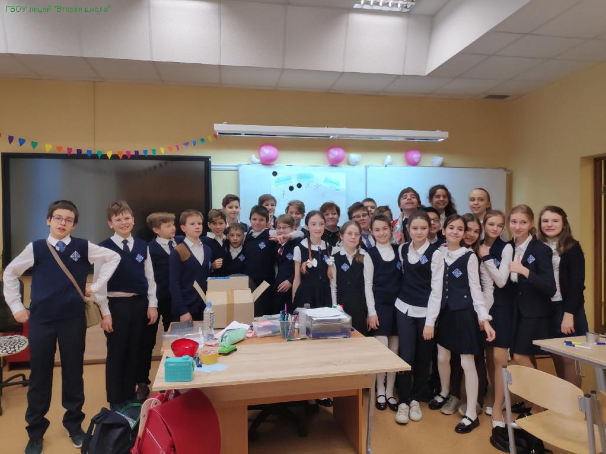

Вторая школа” — одна из старейших физико-математических школ Москвы.
Первые матклассы появились здесь в начале 60-х годов прошлого столетия усилиями известных математиков: И.М. Гельфанда, Е.Б. Дынкина, Б.В.Шабата, Ю.Л. Климонтовича и других.
Вторая школа бережно хранит академические традиции. Интерес и любовь к науке и знанию, самостоятельность в изучении и освоении нового, сотрудничество учителей и учеников — вот важные второшкольные ценности. “Место, где учат и учатся”, — это важный мотив, присутствующий в атмосфере нашей школы.
